Reply in the thread
Ask for an explanation with examples from the same repository, a fix written in your codebase's style, or whether the pattern appears elsewhere.


iReview reviews every pull request with the context of your whole codebase. It flags bugs, security issues and style problems before a human reviewer picks it up, and streams its reasoning so you can see how it got there.
Works with GitHub, GitHub Enterprise Server and Azure DevOps. Supports TypeScript, Python, Java, Go, C# and more, with guidelines for each language.

Paste a pull request link, or let a webhook start the review.
A draft pass, then a second pass that checks the draft.
Findings land where your team already works.
Ask for an explanation with examples from the same repository, a fix written in your codebase's style, or whether the pattern appears elsewhere.
Each thread keeps its own conversation history, so a follow-up question doesn't start from zero.
Choose between fast and thorough, from about 30 seconds to 10 minutes per review.
The same checks run on every pull request and every file, whoever happens to be free to review.
Token usage and cost rolled up by organization, project and user.
No data crosses between organizations, and every webhook is verified with an HMAC signature.
| Area | Manual review only | With iReview |
|---|---|---|
| Consistency | Depends on who reviews | The same standard on every pull request |
| Coverage | Large diffs get skimmed | Every changed source file is read |
| Turnaround | Hours or days waiting for a reviewer | Minutes, before a human picks it up |
Tell us where your code lives and how review works today. We'll show you iReview on a pull request of yours.